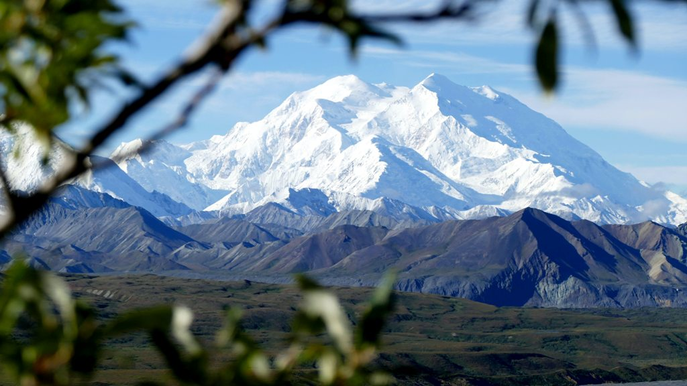

KORONA ZIEMI
KORONA ZIEMI
Denali (McKinley) (6195 m n.p.m.)
Może się pochwalić jedną z największych deniwelacji na świecie (czyli różnicą wysokości między najwyżej i najniżej położonym punktem na określonym terenie). Wynosi ona ponad 5500 m. Dla porównania wartość ta dla Mt. Everest wynosi ok. 3700 m.
Wielu osobom może kołatać w głowie, że najwyższy szczyt Ameryki Północnej nazywa się Mount McKinley. Faktycznie, takie miano zostało nadane tej górze w 1896 r. na cześć Williama McKinleya, który zdobył w tym roku nominację Republikanów na prezydenta. Miejscowa ludność indiańska od dawna nazywała już jednak ten szczyt „Denali”, czyli „Wysoki”. Władze stanu Alaska przegłosowały przywrócenie dawnej nazwy i od 2015 r. najwyższy szczyt Ameryki Północnej nazywa się Denali.
Denali, fot. Joris Beugels, Unsplash